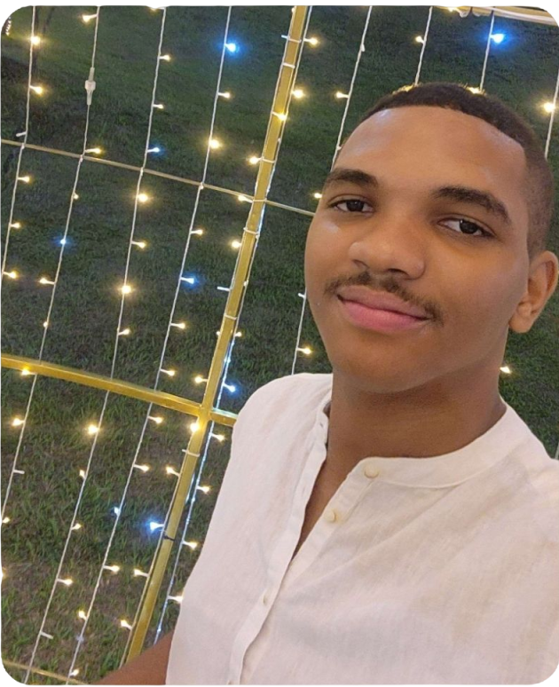

SOBRE O SITE PORTIFOLIO.
Este site é um portfólio pessoal criado para apresentar minhas habilidades, projetos e experiências na área de desenvolvimento de jogos. Ele serve como uma vitrine para mostrar meu trabalho e compartilhar minha paixão por programação de jogos com o mundo. Aqui, você encontrará informações sobre minhas especialidades, projetos anteriores e um pouco sobre mim. Espero que este site seja uma fonte de inspiração e um meio de conectar-me com outros entusiastas de jogos e profissionais da indústria.

MINHAS ESPECIALIDADES.
Programação
EM DESENVOLVIMENTO
Projetos
EM DESENVOLVIMENTO
Jogo Web
EM DESENVOLVIMENTO

MUITO PRAZER, SOU MARCOS ANTONIO BORBA.
Olá! Meu nome é Marcos e sou fascinado por programação de jogos. Tenho uma forte paixão por programar e estou sempre em busca de novas experiências e desafios nessa área. Seja aprimorando minhas habilidades ou explorando novas tecnologias, estou sempre em busca de crescimento e aprendizado. Estou animado para compartilhar minhas paixões e conhecimentos com vocês!
Sou estudante de graduação em Jogos Digitais na Faculdade de Tecnologia Engenheiro Paulo de Frontin, na área de programação. Meu objetivo é ser um programador de jogos backend e procuro me desenvolver em jogos online para grandes empresas.